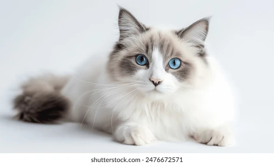

Home
Inspriation
List of Top 5's
My Top 5's
My favorite place to eat at
Kevins Noodle House
My favoriet food has always been Pho, and this place has the best broth in my opinion
Kevins House Menu
Sushi Goemon
Back home in Orange County my favorite place to go eat was the japanese grocery store down the street from my house,
they had great quality sushi for an afforable price. This is the only sushi place that i have tried and actually enjoyed up in San
Fransisco.
Sushi Goemon Menu
El Cafe
This is the cafe right by my apartment, I'm pretty picky about my coffee, this is the only place I've liked that coffee enough to come
back.
El Cafe Menu
Damn Fine
This place holds alot of fond memories, it was the place me and my roommate tried before we started getting close. I see this as the
place that marked the begining
Damn Fine Menu
Lou's Cafe
Before moving up I had come to just visit for a day on my way home from the bay area, I ate here the day before I got my acceptance from
SFSU.
Lou's Cafe Menu
My favorite festivals that i have worked
Outsidelands:
This was the first festival that I was really on my own for and I felt like I was able to prove myself
2025 Updates
Aftershock
This was the first away show I had ever worked with my best friend and the first time i didn't have to be up front taking orders.
2024 Lineup
When We Were Young
We are working this festival for the first time this year, I'm very excited about the lineup and location
2024 Lineup
Ohana
I found my favorite band here with my favorite people in the world
2024 Lineup
Punk in Drublic
NOFX has been on their last tour for the last 2 years, it has been one of my favorite shows as the poeple are incredibly sweet and are great tippers
2024 Lineup
My favorite cat breeds

Ragdoll Cat
Norwegian Forest Cat
Orange Tabby Cat
Tortoiseshell Cat
Birman Cat